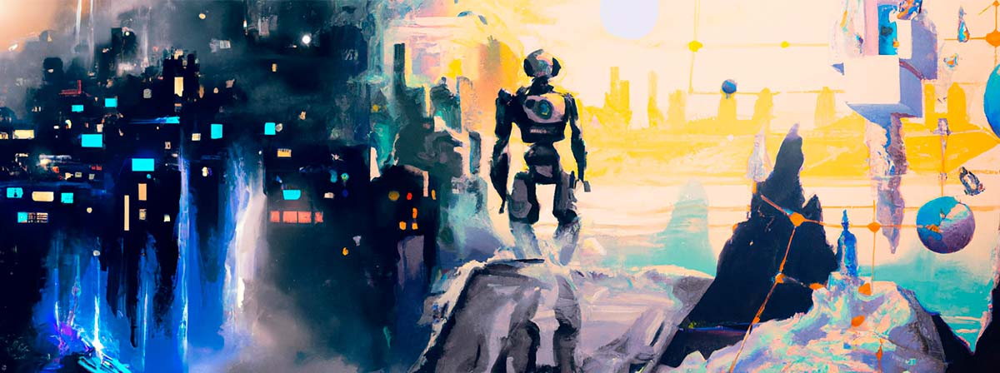

« Universidad de Guadalajara
Galeria de Ganadores IARTE

RevitalSkin: avanzada biotecnología para regenerar la piel de manera precisa y eficiente.
Juan Carlos Ramirez Flores
Producto: Primer lugar

Imagina un escenario donde se fusionan la habilidad artesanal de un chef humano y la innovacion holografica en la cocina
Vicente Gonzalez Garcia
Producto: Segundo lugar

En esta imagen quiero mostrar un jardin inteligente el cual genera energia a traves de la luz solar y hace que las plantas puedan proveer energia electrica
Juan Carlos Monroy Tovar
Producto: Tercer lugar
Este concepto de un inventor trabajando en su taller es retomada gracias a la tecnologia que le permite a una sola persona hacer trabajos de investigacion e invenciones de las cuales no seran capaz por ser mismo.
Alex Kevin Tapia Valle
Interacion: Primer lugar

Una impresionante imagen artistica que capture la esencia de la exploracion del conocimiento y la vastedad del universo
Carlos David Macias Santillan
Interacion: Segundo lugar
La creacion de una escultura de si mismo podria ser una manifestacion de su autoconciencia y un medio para explorar y comunicar su propia existencia y experiencia.
Juan Alejandro Sanchez Vazquez
Interacion: Tercer lugar